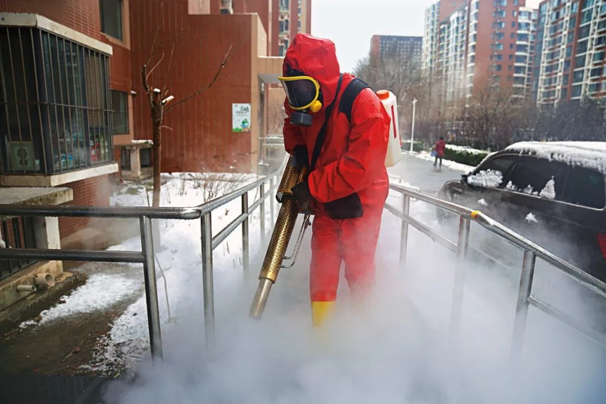
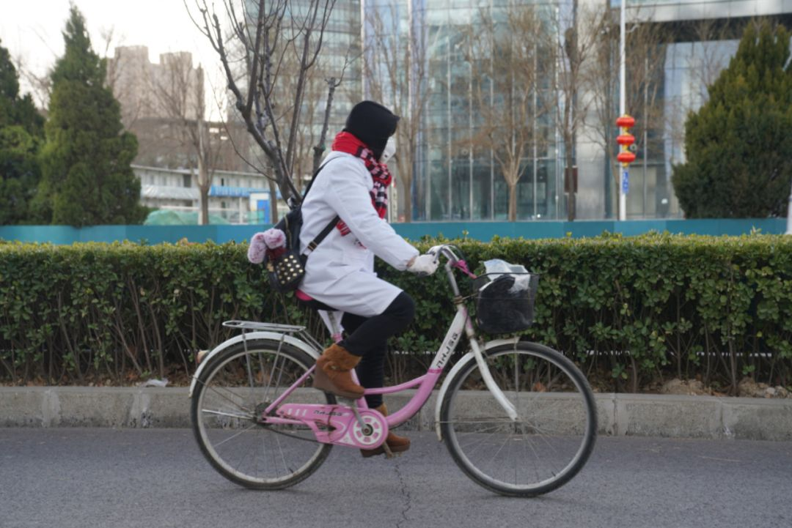
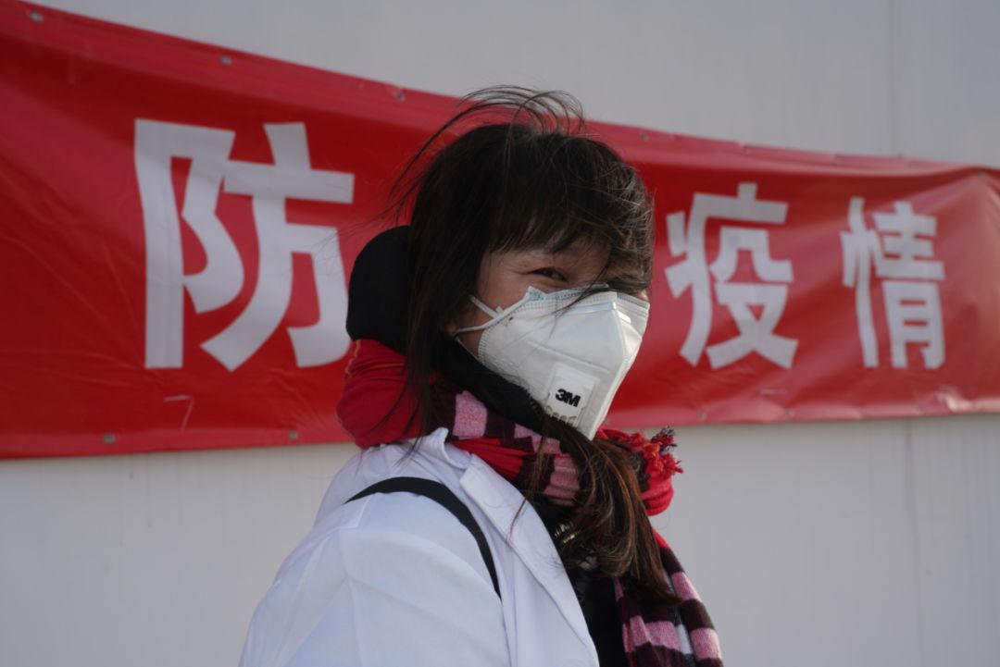

武汉中心医院又有医生殉职，韩国宣布进入战争状态，以及其他 25 条疫情新闻
原文链接 备份链接 根据丁香医生实时数据，截至 3 月 3 日 21:32 时，全国现存确诊病例 29930 例，累计确诊病例 80303 例，现存疑似病例 587 例。其中，重症病例 6806 例，死亡病例 2948 例， …


疫情之下，许多不曾见过的场景变得稀松平常，而曾经再简单不过的事却变得十分艰难。
突如其来的疫情，让家政工的工作节奏在“上户”和“下户”间不断切换。偌大的北京城里，她们留守在各自的出租屋内，期待疫情过后的阳光。
如果晚走一天，小陈姐可能回不了北京。
她是个家政小时工，从业十年，四川阆中人。在北京，她住在五环外靠近望京的费家村。2月3日，她打算从老家返回北京。
在这之前，她就听到北京传来的消息——随着疫情不断严重，费家村一度不允许租户入住，后改成在家隔离一周。这个村子住着几百个村民，以及数万名外地人。
去阆中市火车站要坐中巴车，小陈姐趁停车时在路边买了两斤折耳根。她随身带了十来斤豌豆尖、油菜。“担心进村后，不让出门，买不到吃的。”
进入2月，那些偏远的乡村对疫情也有了警觉。往年，小陈姐会带上阆中特产张飞牛肉送给雇主们。但如今，镇上铺子都关门了。
进了市区，行人很少，她也不敢乱逛。十多个小时的动车上，小陈姐一口水也没喝，因为她不敢摘下口罩。
第二天，她就听家人说，“封村了，路封了，班车也停运了”。

一开始，所有人都意识不到，接下来会面临什么。摄影/引粒

返京之路
想进费家村，得房东来一一领人。寒冬中，小陈姐等了一个小时，总算到家了。
在北京五环外，有很多像费家村这样的地方。这些散落在城市外围的村庄，如今成了外来务工人员的落脚点：租金相对低廉，还方便进城工作。
2017年，小陈姐搬到这里，和女儿住在一起；去年，女儿回成都工作，这个月租1600元的小公寓里就剩下她自己了。
“我还想再干几年，房租也凑合，交得起。”
按计划，隔离一周后，小陈姐就能拿到出入证了。大年初一，费家村处于强封闭状态，留在北京的租户需要办证。原本村子有好几个出入口，现在只留了一个。
起初，办证需要花很长时间排队，一到下午4点，管理人员就说“不办了”。租户们不满，去网上发帖投诉，晚些时候，村子又开始连夜办证。
费家村一度不允许湖北、安徽、河南等八省的租户回村，但后来因为争议太大，改成了这几个省的人进村隔离两周，其他省的人隔离一周。

费家村门前，有人设卡巡查。摄影/引粒
对小陈姐来说，隔离的一周太闷了，她只好用来睡觉。
她的日程原本安排得很满，每天有4份工作：
早上6点半起，在一家幼儿园做3小时保洁；
上午10点，去一个雇主家打扫卫生、做午饭；
午饭后，在另一个雇主家待4个小时，做家务、做晚饭，离开后回到幼儿园刷1小时碗；
下午6点半，在一家药业公司再干2个小时保洁。
这些工作，让小陈姐每月能赚1万多元。但如今，突然袭来的疫情打破了这一切。
年初二，小陈姐接到一个雇主的电话，说年后就不请她帮忙了。
这是一个普通家庭，住着60平方米的两居室。女雇主的母亲得过癌症，无法照顾念小学的外孙，所以雇了小时工。
小陈姐在这家干了两年多，做家务、做晚饭，彼此处得很好。刚来时，她告诉女雇主，这些活不需要花4个小时。对方很体恤人，让她睡1小时午觉。
“她跟我说，实在对不起，现在旅游业没活了，她自己也没工作，打算在家把孩子带到小学毕业。我说没关系，我很理解，人都有无助的时候。”小陈姐说。
因为疫情，私立幼儿园暂时不开学。小陈姐的工作就剩下两个。药业公司告诉她，隔离期间一样付工资。
另一个家庭雇了小陈姐10年。她在这家做午饭，和雇主一家人一起吃。最开始是一家四口，两个小孩长大后，只剩雇主夫妇二人，其中一个出差的话，另一个就叫小陈姐过来一起吃。
这家人倒不在意外地人返京需要隔离这件事，他们告诉小陈姐：“你看能不能偷偷跑出来，和人讲讲好话？”

回到费家村，小陈姐向工作人员出示出入证。摄影/引粒
隔离了一周后，小陈姐去上了几天班。这时，费家村出了新规，从进村那天算起，所有租户都要隔离两周。
刚到手的出入证，就这样被没收了。

越发紧张的雇佣关系
2月初，北京鸿雁社工服务中心负责人梅若接到一个电话，对方叫李萍，是一位育儿嫂，干了十天，下户（月嫂、育儿嫂、住家保姆等家政工通常只服务一家雇主，找到新雇主称为“上户”，离开雇主则称为“下户”）了，中介公司拒绝付她薪水。按照原来谈好的价钱，她本该拿回3600元。
最近二十多天，梅若都在天津家中线上工作。她比以往更忙，收到了很多求助信息。北京鸿雁社工服务中心是一家专门服务家政工群体的公益机构，家政工们称它为“鸿雁之家”。
有人估计，中国共有3500万名家政工，她们是城市化进程中隐秘而又重要的推动者。
疫情让以往就存在的各种纠纷变得尖锐又暧昧。年二十八，李萍上户了，雇主是一个刚生了二胎的母亲。
“她和中介公司谈好，一个月14800元，中介抽4000元。春节三天的加倍工资，雇主另付。最后，李萍只收到了加班费。”梅若说。
李萍只干了十天，因为她觉得雇主要求过于严格。有10年月嫂经验的她觉得有些委屈，比如为婴儿做饭时，她会把孩子暂时交给母亲，但对方对此很有意见：“上一次请的月嫂，孩子我碰都不用碰。”
李萍请辞过两次，雇主都挽留了她，直到第三次，对方终于同意了。中介公司的态度是：“你毁了我的单子，违约了，十天的钱别想拿了。”
得知这个情况，梅若给中介公司打了电话。对方表示：“她在疫情中抛弃了雇主，也不管是否有人接手就直接离开了，这没有职业操守。”
双方交涉了好几次。过去，梅若从不主动直接参与谈判，而是试图让家政工“搞清楚状况”，自己学会谈判和维权。但李萍不太习惯同性格强势的人打交道，中介拉黑了她的微信。打电话过去，她又被对方臭骂了一顿。
小陈姐的自行车。平日里，她每天打四份工。早六点半，一直到晚八点半。半年前，村子没收了她的电动车，改骑自行车上下班。疫情到来，小陈姐工作少了一半。但实际上，她算数千万小时工里比较幸运的一个了。摄影/赵景宜
对于李萍的离开，双方各有说法。
中介公司认为，李萍只是为了赚春节加班费，离开是因为有了新的活。产生纠纷期间，中介在微信上联系李萍，要求她开视频通话，但李萍都没接，就怀疑她已经上户了。
梅若则相信李萍，因为双方多次通话时，“环境非常安静，明显是待业状态”。
“她被误解，是因为在雇主家干活那段时间，上一个客户在微信上问她照顾孩子的问题。听到对方传来的语音时，现雇主很不满意，觉得她在找新工作。”梅若说。
过去能够沟通、解释的误解，在眼下的特殊时期变得难以解释。梅若认为，李萍和中介公司都有责任，都没有预估疫情的影响。中介应该和李萍做好沟通，劝她这时候不下户。
“中介老说，很难找到人接手，雇主也不放心新来的人返京有没隔离，就不请月嫂了。中介把这种损失迁怒到这个姐姐身上。”
比起工作纠纷，无工可做是这次疫情对家政群体最常见的影响。有些人找不到新工作，有些人被雇主要求隔离但找不到隔离地。家政工遇到的这些困难，是近期复工难的一个缩影。
2月8日，梅若终于处理完李萍的个案，双方各担责任，中介公司付李萍2000元工资。

找工作对于家政工而言愈发艰难。摄影/引粒

滞留在老家
1月18日，陈雨露下户，提前回老家山西大同。
回家的原因，是她觉得上一个雇主太苛刻，“看家政工，像看下人一样。在家里，也不敢说话”。
这两年多，雇主家常出门旅游，其间给她放长假，不过会从她每月的工资里扣钱。
“他们第二天要走，头一天晚上才告诉你，这几天不用来了。”陈雨露提了几次建议，希望雇主提前告知，自己回老家好买车票。好几次，她买的都是站票。
年前，陈雨露提前10天告诉雇主，自己“以后不来了”。对方很生气，认为她应该提前两个月说清楚。
“谁能预料这么早？”她有些委屈，“我就说，你们出去旅游也没打招呼啊。”男主人被惹怒了：“凭什么跟你打招呼，我花钱雇你，想让你什么时候休就什么时候休。”
回家没几天，陈雨露收到了儿子的电话，让她去买口罩。陈雨露的儿子在天津当乐器老师，今年22岁。他听说当地有确诊病人后，口罩已经很难买了。
放下儿子的电话，陈雨露跑去药房买了60个医用外科口罩。这也是她买到口罩的最后机会。
一直到年二十八，陈雨露才发现疫情其实和自己紧密相关。家政公司群里，经理发来消息：过完年，不要着急回来，宿舍关闭了。“他说我们要是回去，得隔离14天，可我们没住的地方，去哪隔离呀？”
这个新年陈雨露没过好。她待在家里，心里犯急，担心找不到活。“听到这个事以后很无助。本来生活就很有压力，因为做一天，你才有一天的工资。”
三年前，陈雨露来到北京当住家嫂。按照她的经验，春节后是找工作的高峰期。“正常情况下，我一般初六回北京。等过了元宵节，大量人员返回北京，家政工宿舍人挤人，找活就很紧张。”
她形容家政公司安排找活就像选秀一样，雇主一来，就安排三个人过去，一个一个看，“就是谈话，雇主感觉不行就换下一个，一直挑到满意为止”。

疫情之下，家政工供过于求。摄影/引粒
这些大大小小的中介公司，一般向家政工收取当月10%到30%的费用。中介公司可以为下户的家政工提供付费的日租宿舍，帮助他们度过空档期。
大多数住家保姆都通过中介公司找到雇主。但疫情让宿舍关闭，也让处于空档期的家政工犯了难。
陈雨露说，儿子工作的培训机构，一直没有通知上班时间。这段时间里，儿子也没了收入。
住在甘肃平凉的李梦雨，也因为封路，没法去西安坐火车，回不了北京。
她还没和雇主商量复工时间，也没谈到返京后是否需要隔离两周这件事。她的工作是照顾一个两岁多的小孩，但因为疫情，雇主也留在家里办公，“我得问好了再去，问不好就不去了” 。
这一个多月，她所在的村子被封了，无法看望另一个村的独居母亲。空闲时，李梦雨就看那些从北京带回家的书，写点东西。然而她却被同村人讥笑，“说我成城里人了，看不起她们”“笑我想当作家”⋯⋯
李梦雨称，因为疫情带来的“禁足”，让她对农村的传统和保守感到窒息。
漫漫返京路，不知道还要等待多久。

无处隔离
住家保姆回北京后，雇主一般会要求她们先隔离一段时间。梅若称，有些家庭会提供住处，但更多的家庭没这个条件，需要保姆自己想办法。
在鸿雁之家，有一个叫谭姐的人。她是四川人，远嫁广东后和丈夫关系不好，之后离家来到北京。
去年，她回了一趟惠州参加女儿的婚礼，包了个“很大的红包”。在北京当育儿嫂可以赚不少钱，这让谭姐底气很足，但孩子们从没来看过她。
在北京的10年里，谭姐没有固定住所。她住在雇主家，游走于不同家庭间。碰到空档期时，中介公司提供的宿舍就是她的家。
梅若很早就认识谭姐。“她中专毕业，文化程度不错。有次上烹饪课，不小心踩翻了开水锅，毁容了。她过得一直挺坎坷，但生活得很充实。”
谭姐回北京前，梅若尝试帮她联系住所，但最终失败了。“我问了一些朋友，看有没有住的地方。谭姐也问过小陈姐，但那时小陈姐的外甥女住进去了⋯⋯”
年初七，谭姐住进了老乡家里。雇主知道她回来后，专门给她送过一趟口罩，并承诺在隔离期间照样付工资。
这一天，梅若接到另一个育儿嫂的咨询。
对方称，雇主催她回来上班，提供了一处房子让她隔离5天。房子里只留了挂面、方便面，其他需要她自己解决。育儿嫂认为隔离这5天应该有工资，但雇主咨询了中介公司后称不需要支付。
“我告诉她，关于这事没有明确的法律规定。你从山东临沂坐12个小时车回来，路上冒着交叉感染的风险，回来隔离5天，雇主理应支付这笔费用，但需要双方进一步协商。”
第二天晚上，这个育儿嫂给梅若发来微信：“感觉心被锁起来了。我想回家了。”

回城工作一事，遥遥无期。摄影/引粒

更少工作机会
2月22日，在调查了90名家政工后，鸿雁之家发布了一份家政工疫情调研报告。调查结果显示，受疫情影响，有40%的人在相当长一段时间内无法工作，20%的人失去了原来的工作。
在很长一段时间里，小陈姐都只能打两份工了。2月13日，隔离期结束，她可以出入费家村了。中午，从雇主家离开后，她就直接去了药业公司。
这些天，来公司上班的人很少，做清洁的难度小了不少。公司原来有一个专职保洁员，还有一个和小陈姐一样，每天只干两小时。她们都没回来，被困在了老家。
小陈姐算了一笔账：“公司跟我说，让我先全包了，另外两个人的工钱都算给我。她们回来前，我的收入和过去差不了太多。但那家私立幼儿园刚开不久，说不定要倒闭。这些窟窿还要想办法填。”
每天下午4点不到，小陈姐就回家了。在那间小公寓里，她煮过火锅，做过土豆饼、酸菜面，还拍成小视频发到网上。
梅若一直觉得小陈姐性格乐观，“她喜欢喝红酒。那么苦，不勉力生活，怎么支撑得下去”。
梅若认识的另一个住在费家村的小时工，是一个人过的年。村子实行封闭管理，她同在北京的丈夫和儿子过不来。现在能出村了，但她更多时间都在家躺着，因为无事可做。
“她不像小陈姐，时间安排很密集，和雇主关系经营得很好。她是一个很散的人，不是很有计划性。她的雇主都是不固定的，不是每天都去同一家。有活就做，没了也着急，常常看到活就上户，有一种投机性，趁机会找人多要钱。”
“她常接些不靠谱的活，通常都没有合同。这几年，我跟她去了好几次雇主家找对方要钱。”
过去的雇主让她最近不要去了，因为知道她去很多家里“串”，担心交叉感染。实际上，这段时间她只有一个活，就是去喂猫，因为雇主去南方过年了。
“我说你这样会坐吃山空的。”梅若在电话里这样提醒，“她反倒挺坦然的，说全国人民都这样，正好能躺几天，能有啥办法？”
在京务工的日子里，家政工们会在业余时间聚集到北京鸿雁社工服务中心，一起排练节目。摄影/杨昶
梅若说，家政工这个群体其实蛮乐观的。
她还记得2017年12月，自己去拜访小陈姐，后者当时和姐姐、外甥女一起住在东辛店村。小小的房子里没有电暖器，非常冷，那段时间，村里的很多外地租客匆忙搬走。
在谈话间，村子又一次突然停电，小陈姐三人就像什么也没发生一样，点燃一支蜡烛，继续愉快地谈起刚说的事情。
“那种失序感，那种随时要迎接的意外，对她们来说就是生活的常态。”
“她们长出了一种能力，随时迎接生活里的不确定性。”

猜你还想看
围观
故事
热文

点击购买最新一期《南风窗》
原文链接 备份链接 根据丁香医生实时数据，截至 3 月 3 日 21:32 时，全国现存确诊病例 29930 例，累计确诊病例 80303 例，现存疑似病例 587 例。其中，重症病例 6806 例，死亡病例 2948 例， …
原文链接 备份链接 温州抗疫的“小目标”在变：1月29日是“奋战十天、拿下拐点”；如今是“力争到3月10日，企业复工率、产能恢复率达100%”。 文 | 《财经》记者 王静仪 编辑 | 施智梁 2月初将浙江省温州“小汤山”医院从无到有准 …
原文链接 备份链接 _编者按：这是嘉秋的最后一篇隔离记（前文请看 **[这 …
原文链接 备份链接 *************▲*************春天来了，学校门前的路却空空荡荡。 （沉白白/图） 全文共4034字，阅读大约需要7分钟。 威尼托大区本周关闭了学校，却没有要求大家在家隔离。看着窗外三三两两去踢 …
原文链接 备份链接 原本约好的采访时间，民警高达爽约了。 四个半小时后，他才回复我：“不好意思，突然接到抓捕任务，才回来。” 高达要抓捕的是他所在辖区内一名因斗殴致人轻伤的“潜逃”青年。辖区地处云贵边境的山村，处理年轻人打架斗殴案件并不鲜 …